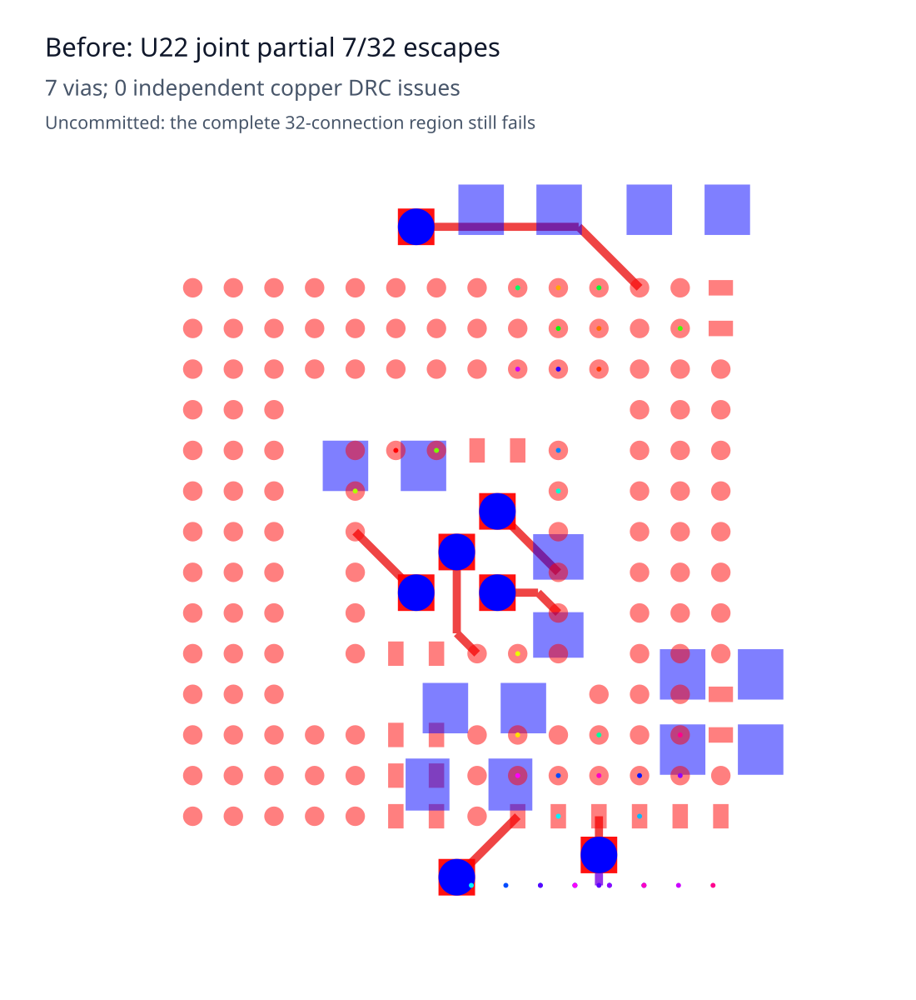
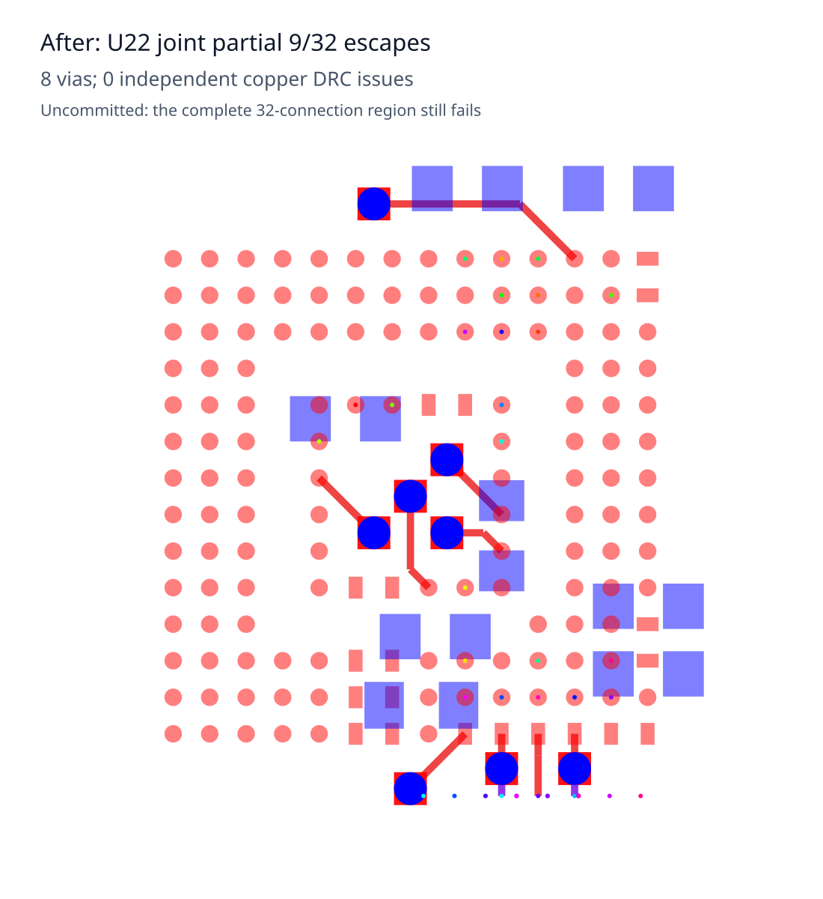
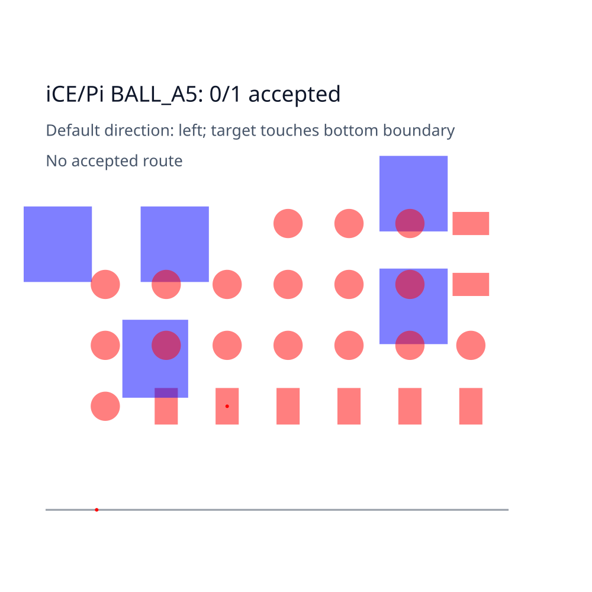
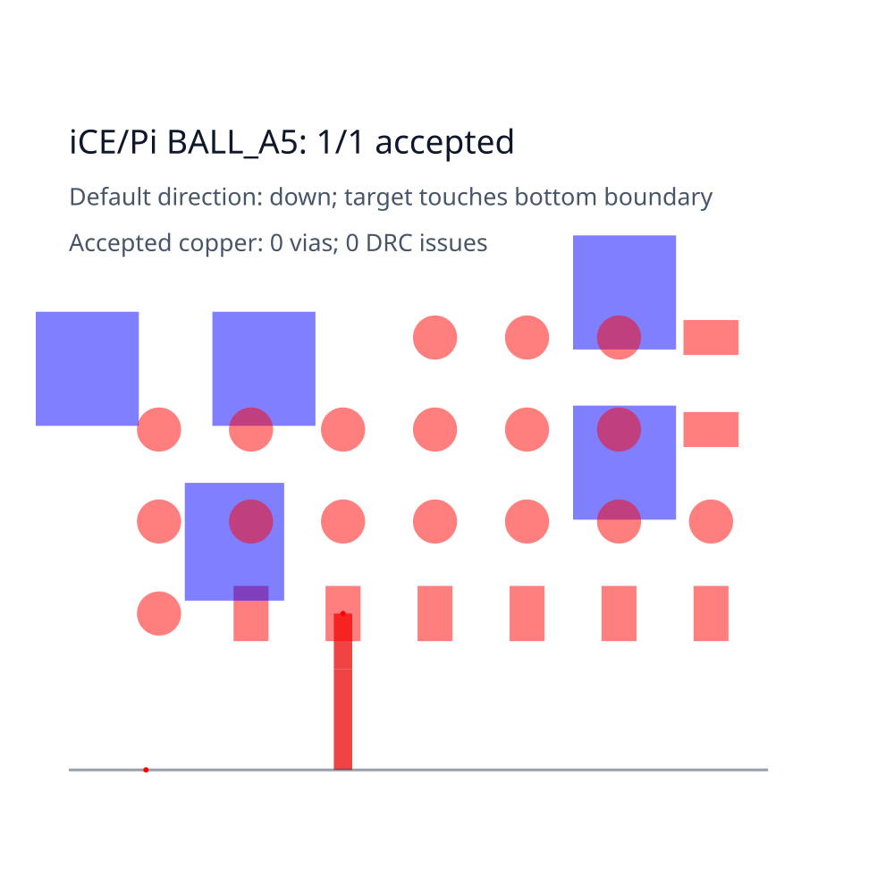

tscircuit 0.0.3245 / core 0.0.2427 / fanout 0.0.91. All six boards still fail fanout; no accepted traces or vias and no DDR bus phase.
Analysis and raw statistics · Full before/after PCB SVG · TSX sources and raw results
The selected boundary-contact default increases isolated accepts 235 → 247 (+5.1%, 78.3% → 82.3%) and reduces aggregate distinct via drills 180 → 165 (−8.3%). There are 13 gains and one real OrangeCrab regression: rightward dogbone sites collide with C4 bottom pads. The old down direction finds a legal interstice.
| Full board: uncommitted first-region partial | Before | After | Committed traces/vias |
|---|---|---|---|
| OrangeCrab rev 0.2.1 ECP5 DDR3 | 122/273 | 140/273 | 0 / 0 |
| Allwinner H616 Devboard DDR3 | 88/174 | 99/174 | 0 / 0 |
| ButterStick r1.0 | 62/91 | 65/91 | 0 / 0 |
| Glider mainboard | 60/95 | 63/95 | 0 / 0 |
| i.MX6 Demo Board | 8/32 | 9/32 | 0 / 0 |
| iCE/Pi CM0 SBC | 7/32 | 9/32 | 0 / 0 |
Uncommitted partial 7 → 9 escapes, 7 → 8 vias, zero independent DRC issues. Neither 32-connection region completes. This separate joint result is not the isolated 300-request total.
| Before | After |
|---|---|
 |  |
The same snapshot test has all 2,038 original obstacles: 0/1 → 1/1 accepted, zero vias and DRC issues. Core relocates automatic breakout endpoints to the emitted boundary exit.
| Before | After |
|---|---|
 |  |
All 349 isolated plane outcomes/copper remain identical. All 72 frozen PreparedBus records are unchanged; raw deadline-limited 9 → 10 completions do not establish a policy gain. Every completed SVG matches the canonical baseline. The CPU alternative reduced matched native medians by 26.8–29.8% without additional escapes; it is deferred in favor of routing yield. No speedup is claimed for the selected fix.